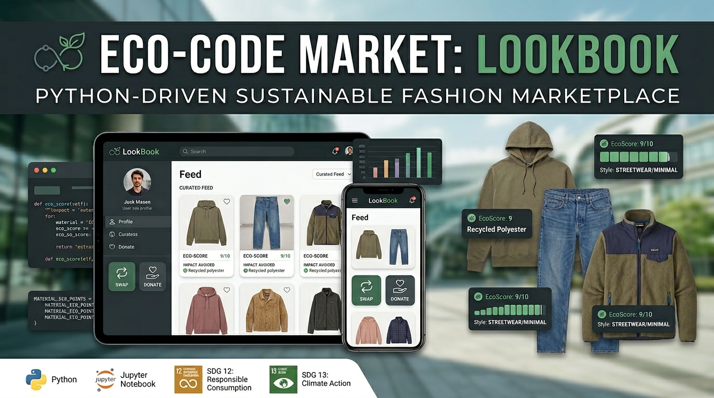
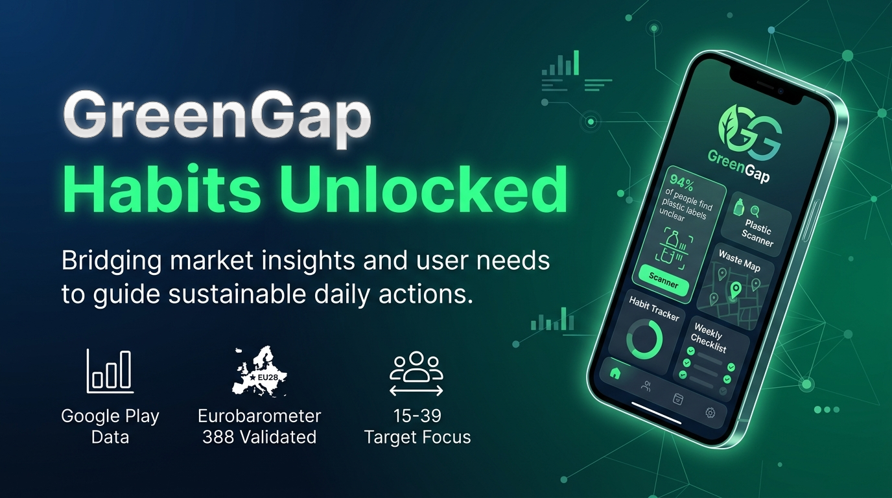
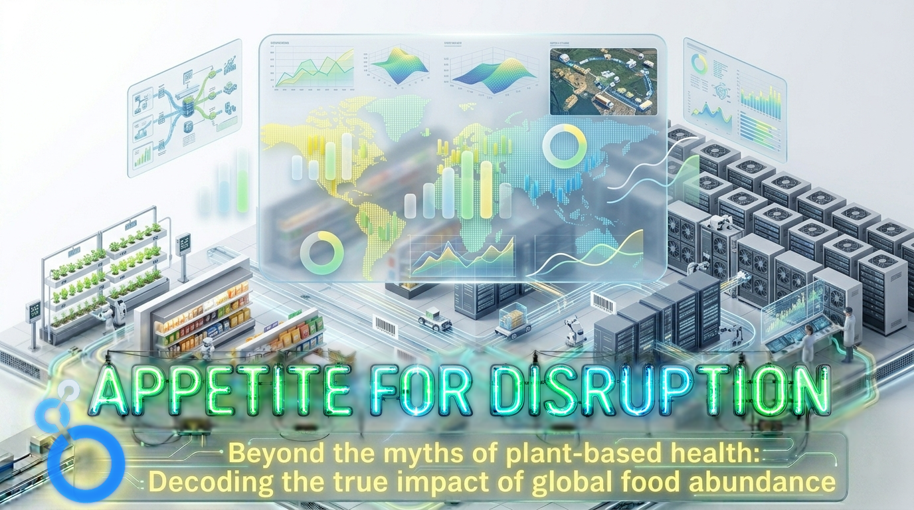
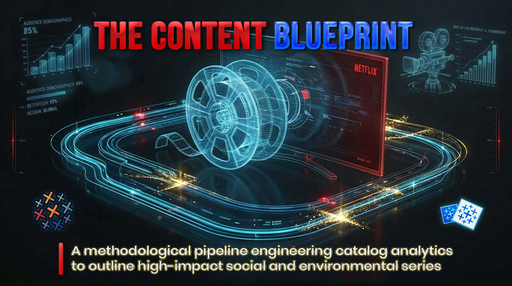

Panoramica
Cosa comprende quest’area:
I progetti in quest’area si concentrano sulla preparazione dei dataset, sulla costruzione di strutture utili e sulla presentazione dei risultati tramite grafici, dashboard e report.
AREA PROGETTI
Pulizia, trasformazione e comunicazione dei dati tramite workflow riproducibili, dashboard e visual storytelling.

Panoramica
I progetti in quest’area si concentrano sulla preparazione dei dataset, sulla costruzione di strutture utili e sulla presentazione dei risultati tramite grafici, dashboard e report.
Ambito attuale

Un prototipo Python-driven di marketplace per moda second-hand, costruito attorno alla gestione degli articoli, metriche di sostenibilità e consumi più consapevoli.
Vedi su GitHub
Un’analisi di mercato e comportamentale che combina dati sull’app market e ricerca UE sulla sostenibilità per esplorare un prodotto green lifestyle focalizzato sulle abitudini.
Vedi su GitHub
Una dashboard interattiva che analizza consumi alimentari globali e obesità attraverso pattern geografici, dietetici e socio-economici.
Vedi su GitHub
Un workflow Tableau che trasforma dati del catalogo Netflix, dataset elaborati e analisi delle reti creative in una content strategy data-driven.
Vedi su GitHub